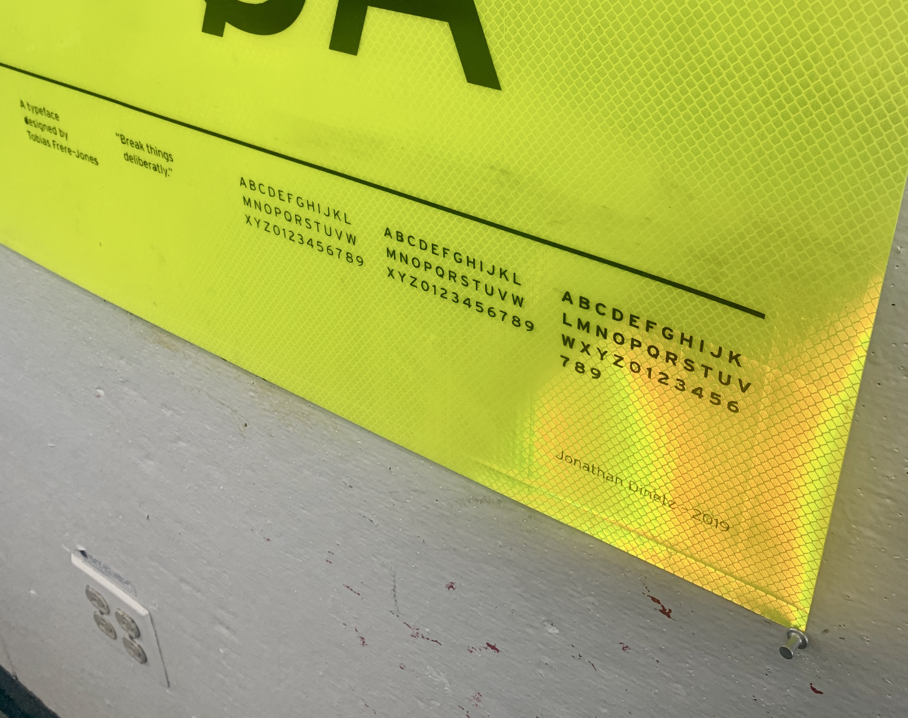
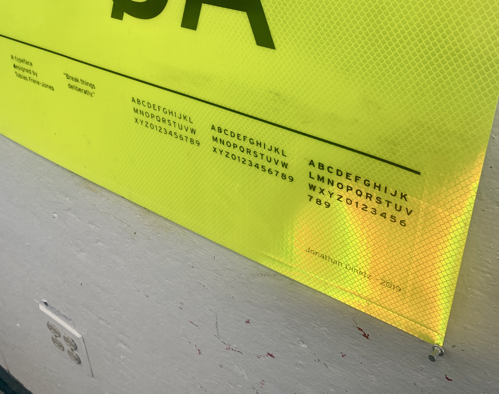

This is a type specimen poster for Tobias Frere-Jones' typeface, Interstate, derived from the U.S. highway signage typeface Highway Gothic. With this in mind I decided to "print" the poster on a sheet of reflective vinyl, purchased from a factory in Bristol, RI, which supplies the greater Providence area with its road and street signs (its a wicked operation, you should visit). To print on this material, I used a large vinyl stencil and applied spray paint. S/o to Simon with the A1 vinyl application technique. This was a Type One assignment.


 
